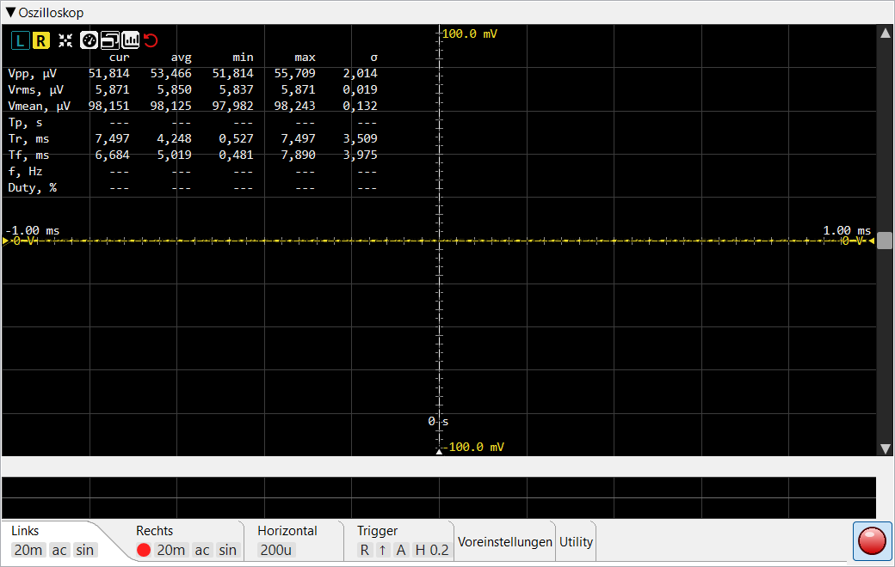
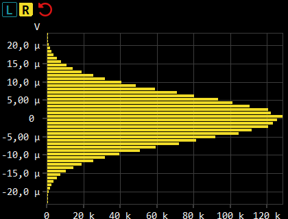

Diese Seite beschreibt die Bedienelemente des Oszilloskops. Für die interne Funktionsweise — Trigger, Sin x/x-Rekonstruktion zwischen Abtastwerten, Netzbrummen-Unterdrückung — siehe Funktionsprinzip ▸ Oszilloskop.
Zeitbereichsansicht des erfassten Signals in Echtzeit. Zwei unabhängige
Kanäle (L / R) teilen sich den Trigger; jeder Kanal besitzt eigene V/div-,
Kopplung-, Interpolations- und Vertikal-Offset-Einstellungen. Die
Erfassungsrate oben rechts (cap/s) zeigt, wie viele Frames
pro Sekunde die Ansicht rendert — bzw. mit dem
Glitch-Trigger, wie viele Glitches pro
Sekunde gefangen wurden (siehe
Erfassungsraten-Anzeige).

L / R
wählen, welcher Kanal die
Messtabelle und den verschiebbaren Kanal-Offset-Marker ansteuert —
sie wechseln nicht die Einstellungs-Tabs. Eine Schaltfläche
ist deaktiviert, wenn der zugehörige Kanal im
Linken / Rechten
Tab abgeschaltet ist. L / R und Auto-Setup
werden immer angezeigt; die übrigen erscheinen, sobald Messwerte
vorliegen (Kopfzeilen-Schaltflächen).0 s;
der zeitliche Offset in Sekunden wird über dem Griff angezeigt. Siehe
Trigger-Offset-Marker.Reihe quadratischer Schaltflächen oben links im Signalbereich des Oszilloskops. L / R und Auto-Setup werden immer angezeigt; die übrigen (Messanzeige, externes Fenster, Statistik-Umschalter, Zurücksetzen) erscheinen, sobald Messwerte berechnet wurden. Eine Maximieren-Schaltfläche ist hier nicht vorhanden.
Wählt, welcher Kanal die Messtabelle und den Kanal-Offset-Griff ansteuert — sie wechseln nicht die Einstellungs-Tabs. Der Schaltflächenhintergrund nimmt die Signalfarbe des Kanals an, wenn dieser ausgewählt ist; L und R sind unabhängig.
Die Verbindung zu den Tabs verläuft in die andere Richtung: eine Kopfzeilen-Schaltfläche ist deaktiviert, wenn der zugehörige Kanal im Linken / Rechten Tab (Kanal-Aktivierung) abgeschaltet ist, und wird wieder aktiviert, sobald der Kanal dort eingeschaltet wird.
Einmalige Anpassung: stellt die Zeitbasis so ein, dass ca. 1,5 Perioden auf dem Bildschirm sichtbar sind, und V/div so, dass das Signal ~75 % des vertikalen Bereichs ausfüllt. Verwendet die gemessene Periode und Vpp des aktuell ausgewählten Kanals.
Öffnet und schließt das Amplitudenhistogramm-Fenster, das zeigt, wie häufig das Signal bei welcher Spannung lag. Die Schaltfläche bleibt gedrückt, solange das Fenster geöffnet ist; das Schließen des Fensters gibt sie wieder frei. Die Erfassung läuft nur, solange das Fenster geöffnet ist.
Blendet die gesamte Messtabellen-Überlagerung ein und aus. Wenn ausgeblendet, sind nur noch das Signal und die L / R-Schaltflächen sichtbar.
Löst die Messtabelle in ein separates Werkzeugfenster aus, das neben der Hauptanwendung platziert werden kann. Nur sichtbar, wenn die Tabelle selbst sichtbar ist. Beim Schließen des Werkzeugfensters kehrt die Tabelle in die Hauptansicht zurück.
Blendet die avg / min / max / σ-Spalten der Messtabelle ein
bzw. aus. Der Worker berechnet sie unabhängig davon weiterhin; der
Umschalter betrifft nur die Darstellung.
Roter Gegenuhrzeigersinn-Pfeil-Knopf (das „Zum Anfang
zurückspulen"-Symbol). Löscht den gleitenden Statistikverlauf, der die
avg / min / max / σ-Spalten speist, sodass der nächste Frame
ein neues Mittelungsfenster beginnt. Nützlich nach einer Änderung der
Messbedingungen. Das Amplitudenhistogramm
startet gemeinsam damit neu — dieselben Ereignisse machen beides ungültig —,
und ebenso beim Starten oder Stoppen des Generators.
Kompaktes Raster oben links im Signalbereich. Acht Zeilen, bis zu fünf
Wertspalten (cur + die vier Statistikspalten). Vmean und
Vrms werden über eine ganzzahlige Anzahl von Signalperioden
integriert statt über den rohen Frame, sodass ihre Statistik stabil
bleibt, statt damit zu schwanken, wie viele Teilperioden gerade ins
Fenster passen (siehe
wie die Werte gemessen
werden).
| Zeile | Bedeutung |
|---|---|
| Vpp | Spitze-Spitze-Spannung (max − min über den sichtbaren Frame). |
| Vrms | Effektivspannung (Quadratischer Mittelwert) des Frames. |
| Vmean | DC-Mittelwert — nützlich zum Erkennen von Offsets. |
| Tp | Periodendauer (Sekunden), präzise berechnet als 1 / f aus der unten gemessenen Frequenz. |
| Tr | Anstiegszeit (10 % → 90 % von Vpp). |
| Tf | Abfallzeit (90 % → 10 %). |
| f | Frequenz des Trigger-Kanalsignals, mit Sub-Sample-Präzision gemessen; die Periodendauer Tp = 1 / f wird daraus abgeleitet. |
| Duty | Tastverhältnis in % der Periode — Einschaltdauer / Periode. |
Gleitende Statistik über ein konfigurierbares Mittelungsfenster (siehe Einstellungen → Oszilloskop → Messungsmittelung). σ ist die Grundgesamtheits-Standardabweichung. Das Fenster beträgt standardmäßig ~33 s bei 30 fps; der Zurücksetzen-Knopf löscht die Statistik.
Wird mit der Schaltfläche Amplitudenhistogramm geöffnet. Es beantwortet eine andere Frage als das Signalbild: nicht, wie die Wellenform über die Zeit aussieht, sondern wie viel ihrer Zeit sie bei welcher Spannung verbringt. Die Spannung läuft an der linken Achse nach oben, die Anzahl der bei diesem Pegel gezählten Abtastwerte entlang der unteren Achse, und jeder Pegel wird als waagerechter Balken gezeichnet.

Oben: das Eigenrauschen eines Wandlers, einige zehn Mikrovolt breit — eine saubere Gaußverteilung. Eine sichtbar nicht-gaußsche Glocke deutet auf etwas anderes als thermisches Rauschen hin.
Die Form ist die Aussage:
| Form | Bedeutung |
|---|---|
| Zwei Spitzen an den Extremen, hohl in der Mitte | Ein Sinus. Eine Sinusschwingung bewegt sich an ihren Umkehrpunkten am langsamsten und verbringt daher die meiste Zeit nahe ±Spitze — die klassische Badewannenform. |
| Eine Glocke um null | Rauschen. Ein sauberes Grundrauschen ist gaußverteilt, und eine sichtbar nicht-gaußsche Glocke deutet auf etwas anderes als thermisches Rauschen hin. |
| Eine hohe Spitze an einem oder beiden Enden | Übersteuerung. An die Aussteuerungsgrenze gepresste Abtastwerte häufen sich im äußersten Balken. |
| Ungleiche Balken ober- und unterhalb der Mitte | Asymmetrie — eine einseitige Begrenzung oder eine asymmetrische Verzerrung. |
Die Spannungsachse ist relativ, und ihre Mitte ist immer 0 V. Die Abtastwerte werden genau so gezählt, wie sie erfasst wurden — nichts wird von ihnen abgezogen und nichts gefiltert —, und die Achse wird anschließend aus dem Mittelwert der Verteilung selbst abgeleitet. Ein DC-Offset der Karte ändert daher den Bezugspunkt, von dem aus die Achse gemessen wird, nicht aber, bei welchem Pegel ein Abtastwert gezählt wird; das Bild rutscht also weder aus der Darstellung heraus noch ändert es seine Form. Beide Hälften sind stets gleich hoch, sodass sich eine asymmetrische Wellenform in ungleichen Balkenlängen ober- und unterhalb der Mitte zeigt.
Die Auflösung richtet sich nach dem Signal, nicht nach dem Wandler. Der Spannungsbereich wird aus der Spitze des Signals selbst bemessen, sodass ein Notch-Residuum im Millivoltbereich ebenso fein aufgelöst wird wie ein Ton bei Vollaussteuerung. Beide Achsen skalieren sich automatisch, während die Zählwerte auflaufen, und Pegel, die so schwach besetzt sind, dass sie nur ein einziges Pixel ergäben, werden an den Enden abgeschnitten — so füllt die Verteilung das Fenster, statt von leeren Ausläufern zusammengedrückt zu werden.
Das Fenster ist in der Größe veränderbar, und die Darstellung skaliert mit. Oben links trägt es:
| Bedienelement | Funktion |
|---|---|
| L / R | Welcher Kanal angezeigt wird — immer nur einer. Ein im Oszilloskop abgeschalteter Kanal ist ausgegraut und nicht wählbar; war er der gerade angezeigte, wechselt das Fenster auf den anderen. Die Wahl bleibt über Sitzungen hinweg erhalten. |
| Zurücksetzen | Löscht die gesammelte Verteilung und sonst nichts — die Statistik der Messtabelle bleibt unangetastet. Damit lässt sich der Bereich neu auf ein Signal einstellen, das deutlich kleiner geworden ist, denn ein schrumpfendes Signal behält den einmal vergebenen Bereich. |
Die Erfassung läuft unbegrenzt, solange das Fenster geöffnet ist, sodass eine Verteilung über Minuten aufgebaut werden kann. Sie übersteht eine V/div-Änderung, einen Bereichswechsel und eine Neukalibrierung — eine Neukalibrierung beschriftet die Achse neu, statt neu zu zählen. Von selbst startet sie nur dann neu, wenn sich der Pegel so weit verschiebt, dass die alten Zählwerte ein anderes Signal beschreiben, und gemeinsam mit der Messstatistik, wenn diese zurückgesetzt wird (siehe Statistik zurücksetzen).
Die Zahl an der unteren Achse zählt die einsortierten Abtastwerte, nicht jeden erfassten: die Erfassung läuft im Takt der Messungen und lässt Blöcke aus, wenn die Maschine ausgelastet ist. Das ist eine erwartungstreue Stichprobe, sie ändert also, wie schnell die Balken wachsen, nicht aber die Form, in die sie hineinwachsen. Die Achse ist als relative Belegung zu lesen, nicht als Zählung aller Abtastwerte.
Die Anzahl der Balken wird unter Einstellungen → Oszilloskop → Histogramm-Klassen festgelegt (Vorgabe 50). Sie ist reine Darstellungsauflösung: die zugrunde liegende Erfassung ist weit feiner, sodass eine Änderung das bereits Gesammelte neu zeichnet, statt es zu verwerfen.
Eine horizontale Markerlinie, deren Dreieck-Griff am rechten Rand liegt. Der Marker kann nur durch Ziehen dieses Griffs nach oben oder unten verschoben werden; Doppelklick auf den Griff bringt ihn in die vertikale Mitte zurück. Der aktuelle Trigger-Pegel (in Volt, für den aktiven Trigger-Kanal) wird neben dem Griff angezeigt. Ausgeblendet, wenn eine Datei geladen ist (ein statisches Signal hat keinen Trigger).
Eine vertikale Markerlinie, deren Dreieck-Griff am unteren Rand
liegt. Er bestimmt, wo im Fenster das Trigger-Ereignis sitzt. Nur durch
Ziehen des Griffs nach links / rechts verschiebbar;
Doppelklick bringt ihn in die Mitte (0 s). Der
zeitliche Offset in Sekunden wird über dem Griff angezeigt. Im
Datei-Modus ausgeblendet.
Jeder aktivierte Kanal besitzt einen eigenen Vertikal-Offset-Marker (gestrichelte Nulllinie + Dreieck-Griff), und beide Griffe befinden sich am LINKEN Rand. Die Offset-Spannung wird neben jedem Griff angezeigt. Nur der Marker des aktuell ausgewählten Kanals ist verschiebbar — der Griff des anderen Kanals ist ausgegraut und dient nur als Referenz. Den aktiven Marker durch Ziehen des Griffs verschieben; Doppelklick zentriert ihn.
Eine vertikale Scrollleiste rechts verschiebt das Signal nach oben oder unten (Spannungs-Offset, beide Kanäle gemeinsam). Eine horizontale Scrollleiste unten verschiebt die Ansicht links / rechts in der Zeit. Jede Scrollleiste verschiebt nur eine Achse — sie zoomt nicht — aber ihr Schieber wird von der Ansicht entsprechend der sichtbaren Fraktion skaliert, sodass er den Zoom nachverfolgt: Änderung von V/div oder t/div vergrößert oder verkleinert den Schieber entsprechend. Klick auf den leeren Bereich blättert in Richtung des Zeigers, oder den Knopf gedrückt halten, um weiter zu blättern, bis der Schieber den Cursor erreicht. Zoom mit dem Mausrad über dem Signalbereich.
Die horizontale Scrollleiste erscheint nur, wenn eine Audiodatei geladen ist — sie dient dazu, eine längere Aufnahme nach links / rechts zu verschieben. Während der Live-Erfassung gibt es nichts Früheres zum Zurückscrollen, daher bleibt sie ausgeblendet.
Blassgraue Zahl oben rechts im Signalbereich. Mit dem
Flanken-Trigger zeigt sie, wie viele neue Frames pro Sekunde die
Ansicht rendert — eine geglättete Rate, die gegen null sinkt, solange
nichts triggert. Mit dem Glitch-
Trigger wird sie zu einem kumulativen Glitches-pro-Sekunde-Zähler:
die Gesamtzahl gefangener Glitches geteilt durch die Aufnahmezeit,
mit drei Nachkommastellen angezeigt, sodass ein Ereignis alle paar Minuten
noch z. B. 0.008 anzeigt, statt auf null gerundet zu
werden. Der Zähler beginnt neu, wenn der Glitch-Typ gewählt oder eine
neue Aufnahme gestartet wird, und die Anzeige bleibt während der gesamten
Aufnahme sichtbar — auch wenn sie 0.000 anzeigt. Beim
Stoppen der Aufnahme bleibt der letzte Wert eingefroren auf dem
Bildschirm stehen, bis zur nächsten Aufnahme. Ausgeblendet, wenn eine
Datei geladen ist (es wird nichts erfasst).
Die Einstellungs-Tab-Leiste am unteren Rand des Bereichs enthält kanalspezifische, Trigger- und Dienstprogramm-Einstellungen. Die Tabs Links, Rechts, Horizontal und Trigger zeigen eine Reihe von Kacheln unter dem Tab-Label mit den wichtigsten Werten, auch wenn der Tab-Inhalt eingeklappt ist; die Tabs Voreinstellungen / Dienstprogramme / Speichern / Laden haben keine Kacheln.
Bedienelemente für den linken Kanal. Enthält den Kanal-Umschalter, V/div-Selektor, AC/DC-Schaltfläche, Sin/Lin-Kontrollkästchen, Residuum-Kontrollkästchen sowie die kanalspezifischen Auswahllisten Netz und LPF. Gleicher Aufbau wie der Tab Rechts.
Quadratischer Umschalter zum Aktivieren / Deaktivieren des Kanals. Wenn deaktiviert, wird das Signal nicht gezeichnet und der Kanal kann nicht als Trigger-Quelle gewählt werden.
Vertikale Auflösung als 1-2-5-10-Liste von 1 µV/div bis
500 V/div. Rad / Pfeiltasten / ↑↓-Tasten schrittweise durch die
Liste; alternativ beliebigen Wert eingeben (mit Suffix
µV / mV / V) für eine Einstellung
außerhalb der Liste. Unabhängig pro Kanal.
Im AC-Modus wird der laufende DC-Mittelwert vom dargestellten Signal subtrahiert, sodass eine kleine AC-Komponente auf einem großen DC-Offset sichtbar wird. Die zugrunde liegenden Messungen werden weiterhin an den Rohabtastwerten berechnet — nur das dargestellte Signal wird verschoben.
Kanalspezifisches Kontrollkästchen mit einem kleinen Sinc-Formbild. Wenn aktiviert, wird das Signal mit Lanczos-Sinc-Interpolation gerendert (korrekte bandbegrenzte Rekonstruktion); wenn deaktiviert, geradlinige Interpolation zwischen Abtastwerten. Einen sichtbaren Unterschied gibt es nur, wenn benachbarte Abtastpunkte auf dem Bildschirm mindestens ~2 px auseinander liegen (d. h. auf der Zeitachse hineingezoomt); bei geringerem Abstand sehen beide identisch aus, und Sinc kostet nur mehr CPU.
Kanalspezifisches Kontrollkästchen. Wenn aktiviert, wird das Signal des Kanals durch das Residuum ersetzt: das erfasste Signal minus einem bestangepassten Einzelton. Die Frequenz des Tons stammt aus der Frequenzmessung des Oszilloskops, und seine Amplitude und Phase werden über das dargestellte Fenster angepasst — der synthetisierte Ton ist somit phasengleich mit der getriggerten Darstellung, und auf dem Bildschirm bleiben die Verzerrung, das Rauschen, der Brumm und die Glitches übrig, die sich unter der Grundschwingung verbergen. Der DC-Pegel bleibt erhalten — nur der Ton wird entfernt — daher AC verwenden, wenn das Residuum auf null zentriert werden soll.
Das Residuum funktioniert auch mit einem Zweiton-Signal. Die beiden Frequenzen werden aus dem erfassten Signal selbst gemessen (ausgehend von den Werten des Generators und anschließend am erfassten Signal verfeinert) — dadurch ist die Subtraktion unempfindlich dagegen, dass DAC und ADC mit unterschiedlichen Takten laufen; die Werte des Generators werden nur verwendet, bis eine Messung vorliegt. Beide Töne werden angepasst — die beiden Fits werden abwechselnd nachgeführt, damit keiner in den anderen leckt — und beide abgezogen; auf dem Bildschirm bleiben die Intermodulationsprodukte, das Rauschen und die Glitches unter dem Tonpaar. Das Fit-Fenster wird automatisch so bemessen, dass es mindestens zwei Schwebungszyklen von |F1 − F2| umfasst; sind beide Frequenzen gleich (keine Schwebung), wird das erfasste Signal unverändert dargestellt.
Triggerung und die Frequenz- / Perioden-Anzeigen arbeiten weiterhin am erfassten Signal, und auch die Vpp- / Vrms-Anzeigen beschreiben weiterhin das erfasste Signal — nur das dargestellte Signal ändert sich. Bei Auto-Setup übernimmt ein Kanal, der sein Residuum zeigt, seine vertikale Skalierung aus dem Spitze-Spitze-Wert des Residuums, während Zeitbasis und Trigger weiterhin aus dem erfassten Signal abgeleitet werden. Wenn die Einstellungs-Tab-Leiste eingeklappt ist, zeigt die Kachel des Kanals einen residual-Marker an, solange der Modus aktiv ist.
Ein Kanal im Residuum-Modus erhält keine rekonstruierte Schwebungs-Überlagerung — die Schwebungshüllkurve gehört zu genau den Tönen, die das Residuum gerade entfernt hat.
Auswahlliste, die einen kanalspezifischen Filter zur Netzbrumm-Unterdrückung anwendet, live bei der Netzfrequenz nachgeführt (50 / 60 Hz und deren Oberwellen). Sie filtert das dargestellte Signal sowie das, worauf Trigger und Messungen wirken, während der DC-Pegel erhalten bleibt. Vier Optionen:
Wie das nachgeführte Kammfilter arbeitet, ist in der Funktionsweise beschrieben.
Auswahlliste, die eine kanalspezifische Hochfrequenz-Bereinigung auf das dargestellte Signal anwendet. Drei Optionen:

Identischer Aufbau wie der Tab „Links" — Kanal-Umschalter, V/div, AC/DC, Sin/Lin und Residuum, jedoch für den rechten Kanal.

Horizontale Auflösung als 1-2-5-10-Liste von 1 µs/div bis
1 s/div (kein ns/div). Rad / Pfeiltasten / ↑↓-Tasten schrittweise
durch die Liste; alternativ beliebigen Wert eingeben
(µs / ms / s) für eine Einstellung
außerhalb der Liste. Der Signalmittelpunkt bleibt bei einer t/div-Änderung
fest — nur die Breite des sichtbaren Fensters ändert sich.

Paar von L / R-Umschaltern zur Auswahl, welcher Kanal den Trigger-Komparator ansteuert.
↑ / ↓-Paar. Steigende Flanke löst aus, wenn das Signal den Trigger-Pegel nach oben überschreitet; fallende Flanke für die Abwärtsrichtung. Beim Glitch-Typ wählt dasselbe Paar stattdessen den Anzeige-Anker: ↑ verankert die Anzeige am Anfang des Glitches (dem letzten sauberen Abtastwert vor dem Bruch), ↓ an seinem Ende (dem ersten eingeschwungenen Abtastwert danach).
E / G-Paar, das wählt, worauf der Trigger reagiert.
Der Glitch-Detektor verwendet den Trigger-Pegel nicht — er sagt jeden
Abtastwert aus der Rekurrenz der Sinusschwingung selbst voraus und löst
aus, wenn der Vorhersagefehler deutlich über dem Grundrauschen liegt;
so fängt er Fehler, die viel zu klein sind, um irgendeinen Flankenpegel
zu erreichen. Der Pegel-Marker und die
Hysterese spielen im Glitch-Modus
daher keine Rolle. Bruchstellen, die näher als 1 ms beieinander
liegen, verschmelzen zu einem Ereignis, sodass Beginn und Erholung eines
Aussetzers als ein einziger Glitch zählen. Solange der Glitch-Typ aktiv
ist, wird die cap/s-Anzeige zu einem kumulativen
Glitches-pro-Sekunde-Zähler (siehe
Erfassungsraten-Anzeige). Wie der Detektor
einen echten Bruch von Rauschen unterscheidet, beschreibt
Funktionsprinzip ▸
Oszilloskop ▸ Trigger.
A / N / S — Auto, Normal, Single.
Der Glitch-Typ funktioniert nur in Normal und Single — in Auto läuft die Anzeige frei und würde einen gefangenen Glitch sofort überschreiben; ein Wechsel auf Auto stellt den Typ daher auf Flanke zurück und graut die G-Schaltfläche aus.
Nur aktiv, wenn der Modus Single ist. Betätigung schaltet die nächste Einzelschuss-Erfassung scharf.
Kontrollkästchen + Schrittselektor in Divisions-Einheiten (0,0 .. 5,0 in
0,1-Schritten). Schmitt-Trigger-Hysterese: ein steigender Trigger löst
nur aus, wenn das Signal zuerst unter (Pegel − Hyst) gefallen
ist und dann (Pegel + Hyst) nach oben überschritten hat.
Dies stabilisiert den Trigger bei schwachen oder verrauschten Signalen
— ohne Hysterese verursacht Rauschen um den Pegel eine Vielzahl von
Fehlauslösungen und ein zitterndes Signal. Der Selektor ist ausgegraut,
wenn das Kontrollkästchen deaktiviert ist; der Wert bleibt beim
Umschalten erhalten. Gilt nur für den Flanken-Typ — der
Glitch-Trigger ignoriert Pegel und
Hysterese gleichermaßen.
Kontrollkästchen, nur aktiv, wenn der Generator auf Zwei Töne eingestellt ist (für jede andere Wellenform ausgegraut). Wenn aktiviert, überlagert das Oszilloskop die abgedimmte |f₁−f₂|-Schwebungshüllkurve der beiden Töne über das Live-Signal — so kann die langsame Schwebung, die die beiden nah beieinander liegenden Töne erzeugen, sichtbar gemacht und der Trigger darauf stabilisiert werden. Die Überlagerung wird pro angezeigtem Kanal gezeichnet, jeweils in einem abgedimmten Ton der eigenen Signalfarbe dieses Kanals, sodass jedes Zwei-Töne-Signal seine eigene, visuell zugeordnete Hüllkurve trägt.
Sie ist in zwei Fällen ausgeblendet: solange der Generator gestoppt ist (ohne Töne gibt es keine Schwebung, und die Rekonstruktion würde nur Rauschen nachzeichnen) sowie auf jedem Kanal, der sein Residuum zeigt (die Hüllkurve gehört zu den Tönen, die dieser Kanal gerade entfernt hat).

Vollständige Oszilloskop-Konfigurationen speichern und abrufen. Im Namensfeld einen Namen für die aktuelle Konfiguration eingeben und Speichern drücken — alle kanal- und trigger-spezifischen Einstellungen werden gespeichert (V/div, AC/DC, Sin/Lin, t/div, Trigger-Kanal / Flanke / Modus, Hysterese-Aktivierung + Wert). Zum Wiederherstellen einen zuvor gespeicherten Namen mit dem Pfeil rechts neben dem Feld auswählen und Laden drücken. Löschen entfernt die ausgewählte Voreinstellung (nach einer Bestätigung).

Rendert den Oszilloskop-Bereich als PNG in einer wählbaren Auflösung und ermöglicht das Speichern auf Disk (oder Kopieren). Das Rendering verwendet eine Offscreen-Kopie des Bereichs mit eingeklappten Einstellungs-Tabs (sodass das Signal dominiert) und in der gewählten Größe — unabhängig vom sichtbaren Fenster.
Öffnet den gemeinsamen ADC-Kalibrierungsdialog, der die Vollaussteuerungsspannung des ADC aus einem bekannten Referenzsignal (einem Kalibrator oder einem Präzisionsgenerator) ableitet und in den aktiven Bereich der gebundenen Karte schreibt. Deaktiviert, bis eine Erfassung läuft.

Geben Sie die tatsächliche Signalamplitude ein, die jetzt am Eingang
anliegt, in nV / µV / mV / V,
und die Anwendung skaliert den digitalen Messwert so, dass dieser Pegel korrekt
angezeigt wird. Der Dialog hat eine Zeile Links und eine Rechts für
eine Stereo-Karte — die Kalibrierung erfolgt stets pro Kanal, da echte
Wandlerkanäle nie bis auf das letzte ppm übereinstimmen — und eine einzelne Zeile
für eine Mono-Karte. Nur die Zeile des gerade gemessenen Kanals ist aktiv;
die Zeile des anderen Kanals wird deaktiviert und leer angezeigt
(die Abbildung oben zeigt eine Erfassung nur des rechten Kanals). Kalibrieren Sie
den anderen Kanal, indem Sie ihn nacheinander messen — jede Zeile schreibt nur den
aktiven Bereich ihres eigenen Kanals. Eine
Karte, die auf Kopplung:
Verknüpft eingestellt ist, wird ebenso pro Kanal kalibriert — Verknüpft
koppelt nur, welcher Bereich ausgewählt ist, nie die gemessenen Werte.

Schreibt die zuletzt erfassten Daten in eine Audiodatei. Das Dauerfeld (eine einzelne Eingabe in Sekunden) legt fest, wie viel gespeichert wird; die Dateiöffnen-Schaltfläche wählt das Ziel; die Speichern-Schaltfläche schreibt die Datei.

Spielt eine Audiodatei als Datenquelle des Oszilloskops ab, anstelle des
Live-ADC. Die Audio-öffnen-Schaltfläche wählt die Datei — jede
WAV / AIFF / FLAC-Datei, nicht nur
von diesem Oszilloskop gespeicherte. Dies ist ein einfacher Wellenformbe-
trachter für die Datei: kein Triggern oder Messen ist für ein
geladenes Signal verfügbar, und der FFT-Analysator läuft nicht über
das oszilloskopseitig geladene Audio. Die ganze Datei wird in den
Speicher dekodiert (16 Byte pro Sample-Frame); eine Datei, die nicht in
den Java-Heap passt, wird vorab abgelehnt — mit Angabe von benötigtem und
freiem Speicher.
Die Tabs Links, Rechts, Horizontal und Trigger zeigen eine Reihe kleiner Kacheln unter dem Tab-Label mit den Schlüsselwerten des jeweiligen Tabs (die übrigen Tabs haben keine). Kacheln sind passiv und besitzen Tooltips, die den angezeigten Wert erläutern; sie bleiben sichtbar, auch wenn der Tab-Inhalt eingeklappt ist.
Eine LED-Kachel auf dem Tab Links / Rechts, die nur angezeigt wird, wenn der Kanal aktiviert ist (fehlt, wenn der Kanal deaktiviert ist).
Die vertikale Auflösung des Kanals in Kurzform (z. B. 1m,
500m, 1).
ac oder dc — die Kopplung des Kanals.
sin wenn Sinc-Interpolation aktiv ist, lin
wenn nicht.
Die horizontale Auflösung in Kurzform — z. B. 200u,
1m, 20m.
L oder R — welcher Kanal aktuell zum Scharf
schalten des Triggers verwendet wird.
↑ für steigende, ↓ für fallende Flanke. Beim Glitch-Typ: Anker am Anfang (↑) oder Ende (↓) des Glitches.
G — wird nur angezeigt, solange der
Glitch-Trigger ausgewählt ist. Das
Fehlen dieser Kachel bedeutet den Flanken-Typ.
A, N oder S — Auto, Normal, Single.
Wird nur angezeigt, wenn Hysterese aktiviert ist; die Zahl gibt das
Hysterese-Fenster in Divisions an (z. B. H 2.0).
Das Fehlen dieser Kachel bedeutet, dass die Hysterese deaktiviert ist.
Das Signal kann auf beiden Achsen verschoben und skaliert werden. Alles Folgende funktioniert gleich, ob das Oszilloskop live läuft (Aufnahme), gestoppt ist (zeigt den letzten erfassten Puffer) oder eine geladene Datei zeigt — der einzige Unterschied ist, dass eine Live-Erfassung laufend neue Abtastwerte hinzufügt, während die anderen beiden eingefroren sind. Die beiden Achsen sind völlig unabhängig: eine horizontale Aktion verschiebt oder skaliert das Signal nie vertikal, und eine vertikale Aktion berührt die Horizontale nie.
Das einfache Rad oder das Ziehen eines Offset-Griffs an einem der Seitenränder verschiebt beide aktiven Kanäle gemeinsam und behält ihren Abstand bei. Das Signal lässt sich verschieben, bis ±FS/2 — die Vollaussteuerungsgrenze des Wandlers — die Bildschirmmitte erreicht; das reicht, um jeden Teil des Signals in der Mitte zu parken, und nicht weiter.
500 µV/div, rechts 1 mV/div: ein
Hineinzoomen stuft den rechten auf 500 µV/div und
skaliert den linken auf 250 µV/div (50 µV
neben der 200-µV-Stufe), statt den linken auf
200 µV/div zu stufen und den rechten auf
400 µV/div zu skalieren (100 µV neben
500 µV). Ein manuell gesetzter Kanal außerhalb der Reihe
skaliert ebenso proportional zum Kanal, der stuft.Mit der linken Taste über das Signal ziehen, um ein Rechteck aufzuziehen; beim Loslassen dehnt sich die Auswahl auf die ganze Ansicht aus — die einzige Geste, die beide Achsen zugleich skaliert. Eine Auswahl kleiner als 8 Pixel in einer Richtung wird ignoriert, sodass ein versehentlicher Klick nichts bewirkt. Das Ziehen muss auf der freien Plotfläche beginnen — nicht auf einem Marker-Griff, einer Kopfzeilen-Schaltfläche oder einer Achsenbeschriftung. Es funktioniert gleich, ob das Oszilloskop live läuft, gestoppt ist oder eine geladene Datei zeigt, und dieselbe Geste zoomt auch die FFT- und Frequenzgang-Ansichten (der verdichtete Streifen in einem geteilten Layout ist nicht zoombar).
Steht Einstellungen ▸
Oszilloskop ▸ Nachleuchtdauer auf etwas anderem als
Off, bleibt jede durchlaufende Spur stehen und verblasst wie
der Phosphor eines Analog-Oszilloskops, sodass sich Trigger-Jitter und
Rauschen zu einer sichtbaren Hüllkurve aufschichten. Angeboten werden
Abklingzeiten von 0,5, 1, 2, 5, 10, 15 und 20 s, dazu ∞
(Spuren verblassen nie) und ein manueller Wert. Das Nachleuchten
erfordert GPU-Beschleunigung (Einstellungen ▸ Erscheinungsbild) und hat
beim CPU-Renderer keine Wirkung.
Das Nachleuchten folgt einigen Regeln, damit es nie veraltete Geometrie zeigt: